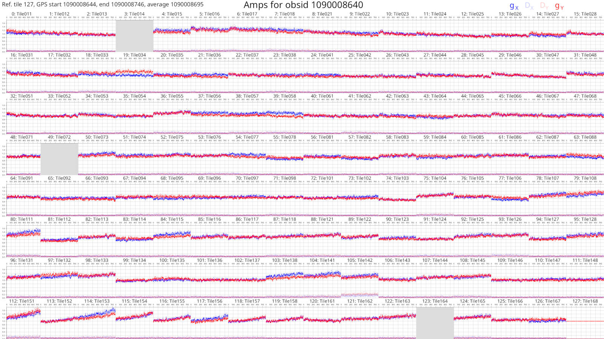
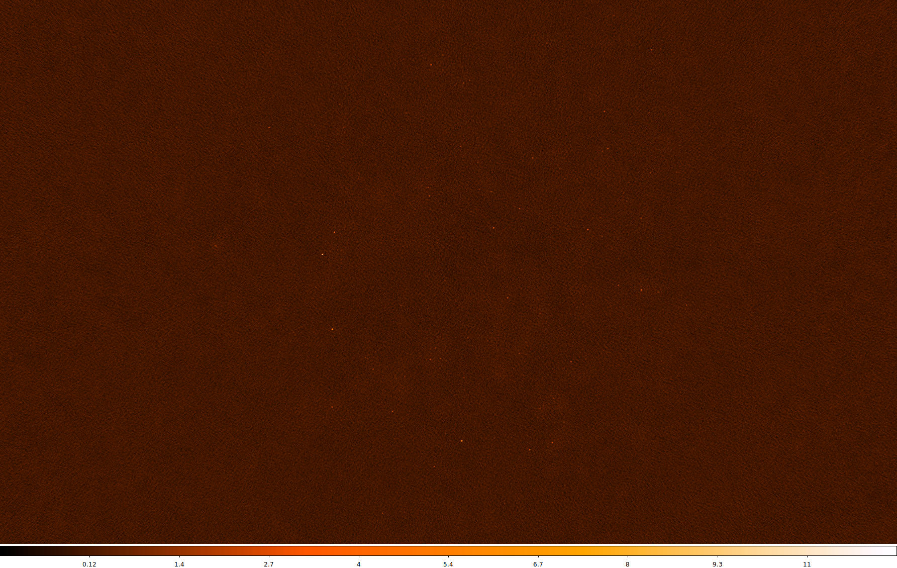

Introduction
mwa_hyperdrive (simply referred to as hyperdrive) is calibration software
for the Murchison Widefield Array radio telescope. The documentation contained
in this book aims to help understand how to use it and how it works.
Some of the more useful parts of this documentation might be:
-
a user guide;
- e.g. How do I use the program? What does the program do? What does the program assume?;
-
definitions and concepts; and
- e.g. How is a particular sky-model source list format defined?
- e.g. How are XX, XY, YX, YY defined? What is a calibration timeblock?
Installation
The easiest way to get access to hyperdrive is to download a pre-compiled
binary from GitHub. Instructions are on the next page.
However, you may need to compile hyperdrive from source. If so, see the
instructions here (note that the code will likely run faster
if you compile it from source).
Finally, regardless of how you get the hyperdrive binary, follow the post
installation instructions.
Installing hyperdrive from pre-compiled binaries
Visit the GitHub releases page. You should see releases like the following:

- Under "Assets", download one of the
tar.gzfiles starting withmwa_hyperdrive; - Untar it (e.g.
tar -xvf mwa_hyperdrive*.tar.gz); and - Run the binary (
./hyperdrive).
If you intend on running hyperdrive on a desktop GPU, then you probably want
the "CUDA-single" release. You can still use the double-precision version on a
desktop GPU, but it will be much slower than single-precision. Instructions to
install CUDA are on the next page.
Note: The pre-compiled binaries are made by GitHub actions using:
cargo build --release --locked --no-default-features --features=hdf5-static,erfa-static,cfitsio-staticThis means they cannot plot calibration solutions.
"CUDA-double" binaries have the
cudafeature and "CUDA-single" binaries have thecuda-singlefeature. CUDA cannot legally be statically linked so a local installation of CUDA is required.
Installing hyperdrive from source code
Dependencies
hyperdrive depends on these C libraries:
-
- Ubuntu:
libcfitsio-dev - Arch:
cfitsio - Library and include dirs can be specified manually with
CFITSIO_LIBandCFITSIO_INC- If not specified,
pkg-configis used to find the library.
- If not specified,
- Can compile statically; use the
cfitsio-staticorall-staticfeatures.- Requires a C compiler and
autoconf.
- Requires a C compiler and
- Ubuntu:
-
- Ubuntu:
liberfa-dev - Arch: AUR package
erfa - The library dir can be specified manually with
ERFA_LIB- If not specified,
pkg-configis used to find the library.
- If not specified,
- Can compile statically; use the
erfa-staticorall-staticfeatures.- Requires a C compiler and
autoconf.
- Requires a C compiler and
- Ubuntu:
-
- Ubuntu:
libhdf5-dev - Arch:
hdf5 - The library dir can be specified manually with
HDF5_DIR- If not specified,
pkg-configis used to find the library.
- If not specified,
- Can compile statically; use the
hdf5-staticorall-staticfeatures.- Requires
CMakeversion 3.10 or higher.
- Requires
- Ubuntu:
Optional dependencies
-
freetype2(for calibration solutions plotting)- Only needed if the
plottingfeature is enabled (which it is by default) - Arch:
pkg-configmakecmakefreetype2 - Ubuntu:
libfreetype-devlibexpat1-dev
- Only needed if the
-
- Only needed if either the
cudaorcuda-singlefeature is enabled - Arch:
cuda - The library dir can be specified manually with
CUDA_LIB- If not specified,
/usr/local/cudaand/opt/cudaare searched.
- If not specified,
- Can link statically; use the
cuda-staticorall-staticfeatures.
- Only needed if either the
Installing Rust
hyperdrive is written in Rust, so a Rust
environment is required. The Rust
book has excellent
information to do this. Similar, perhaps more direct information is
here.
TL;DR
$ curl --proto '=https' --tlsv1.2 -sSf https://sh.rustup.rs | sh
Do not use apt to install Rust components.
Cloning the repo
$ git clone https://github.com/MWATelescope/mwa_hyperdrive
Don't forget to cd into it:
$ cd mwa_hyperdrive
Compiling
TL;DR
cargo install --path . --locked
This will install hyperdrive to ~/.cargo/bin/hyperdrive. The file can be
moved anywhere and it will still work. The installation destination can be
changed by setting CARGO_HOME.
CUDA
Do you have a CUDA-capable NVIDIA GPU? Ensure you have installed CUDA, find its compute capability here (e.g. Geforce RTX 2070 is 7.5), and set a variable with this information (note the lack of a period in the number):
export HYPERDRIVE_CUDA_COMPUTE=75
Now you can compile hyperdrive with CUDA enabled (single-precision floats):
cargo install --path . --locked --features=cuda-single
If you're using "datacentre" products (e.g. a V100 available on the Pawsey-hosted supercomputer "garrawarla"), you probably want double-precision floats:
cargo install --path . --locked --features=cuda
You can still compile with double-precision on a desktop GPU, but it will be much slower than single-precision.
Static dependencies
The aforementioned C libraries can each be compiled by cargo. all-static
will statically-link all dependencies (including CUDA, if CUDA is enabled) such
that you need not have these libraries available to use hyperdrive.
Individual dependencies can be statically compiled and linked, e.g.
cfitsio-static. See the dependencies list above for more information.
Multiple features
cargo features can be chained in a comma-separated list:
cargo install --path . --locked --features=cuda,all-static
Troubleshooting
If you're having problems compiling, it's possible you have an older Rust toolchain installed. Try updating it:
$ rustup update
If that doesn't help, try cleaning the local build directories:
$ cargo clean
and try compiling again.
Post installation instructions
Setting up the beam
Many hyperdrive functions require the beam code to function. The MWA FEE beam
HDF5 file can be obtained with:
$ wget http://ws.mwatelescope.org/static/mwa_full_embedded_element_pattern.h5
Move the h5 file anywhere you like, and put the file path in MWA_BEAM_FILE:
$ export MWA_BEAM_FILE=/path/to/mwa_full_embedded_element_pattern.h5
See the README for hyperbeam
for more info.
Introduction
hyperdrive aims to make users' lives as easy as possible. Commands should
always have good quality help text, errors and output messages. However, users
may have questions that the hyperdrive binary itself cannot answer; that's
where this documentation comes in.
If ever you find hyperdrive's help text lacking or this documentation doesn't
answer your question, feel free to file an
issue (or even better,
file a PR!).
Getting started
Do you want to do some calibration, but don't know how to start? If ever you're in doubt, consult the help text:
$ hyperdrive di-calibrate --help
di-calibrate is one of many subcommands. Subcommands are accessed by typing
them after hyperdrive. Each subcommand accepts --help (as well as -h).
Detailed usage information on each subcommand can be seen in the table of
contents of this book. More information on subcommands as a concept is below.
Subcommands
hyperdrive itself is split into many subcommands. These are simple to list:
$ hyperdrive -h
# OR
$ hyperdrive --help
Output (edited for brevity):
SUBCOMMANDS:
di-calibrate
simulate-vis
solutions-convert
solutions-plot
srclist-by-beam
The help text for these is accessible in a similar way:
$ hyperdrive solutions-plot -h
# OR
$ hyperdrive solutions-plot --help
hyperdrive-solutions-plot 0.2.0-alpha.11
Plot calibration solutions
USAGE:
hyperdrive solutions-plot [OPTIONS] [SOLUTIONS_FILES]...
ARGS:
<SOLUTIONS_FILES>...
OPTIONS:
-r, --ref-tile <REF_TILE> The reference tile to use. If this isn't specified, the best one from the end is used
-n, --no-ref-tile Don't use a reference tile. Using this will ignore any input for `ref_tile`
--ignore-cross-pols Don't plot XY and YX polarisations
--min-amp <MIN_AMP> The minimum y-range value on the amplitude gain plots
--max-amp <MAX_AMP> The maximum y-range value on the amplitude gain plots
-m, --metafits <METAFITS> The metafits file associated with the solutions. This provides additional information on the plots, like the tile names
-v, --verbosity The verbosity of the program. Increase by specifying multiple times (e.g. -vv). The default is to print only high-level information
-h, --help Print help information
-V, --version Print version information
...
Shortcuts
It's possible to save keystrokes when subcommands aren't ambiguous, e.g. use
solutions-p as an alias for solutions-plot:
$ hyperdrive solutions-p
<help text for "solutions-plot">
This works because there is no other subcommand that solutions-p could refer
to. On the other hand, solutions won't be accepted because both
solutions-plot and solutions-convert exist.
di-c works for di-calibrate. Unfortunately this is not perfect; the - is
required even though di should be enough.
Writing out calibrated data
di-calibrate is able to write calibrated visibilities. In the following
example, calibration solutions are written to hyp_sols.fits and calibrated
visibilities are written to hyp_calibrated.ms and hyp_calibrated.uvfits:
$ hyperdrive di-calibrate \
-d *gpubox*.fits *.metafits *.mwaf \
-s a_good_sky_model.yaml \
-o hyp_sols.fits hyp_calibrated.ms hyp_calibrated.uvfits
Multiple solutions and visibility outputs can be written out, and these may or may not be of the same type. Note that it will be much more efficient to write out one set of calibrated visibilities.
Averaging output data
When writing out calibrated visibilities, they can be averaged with
--output-vis-time-average and --output-vis-freq-average. Units can be given
to these (seconds and kiloHertz, respectively); e.g.
$ hyperdrive di-calibrate \
-d *gpubox*.fits *.metafits *.mwaf \
-s a_good_sky_model.yaml \
-o hyp_sols.fits hyp_calibrated.ms hyp_calibrated.uvfits \
--output-vis-time-average 8s \
--output-vis-freq-average 80kHz
Note that units are case insensitive. If no units are given, then these flags average the specified number of visibilities together; e.g.
$ hyperdrive di-calibrate \
-d *gpubox*.fits *.metafits *.mwaf \
-s a_good_sky_model.yaml \
-o hyp_sols.fits hyp_calibrated.ms hyp_calibrated.uvfits \
--output-vis-time-average 4 \
--output-vis-freq-average 2
would average 4 visibilities in time, 2 in frequency. If the input data has a time resolution of 2 seconds and frequency resolution of 40 kiloHertz, then these settings would result in the same output as the previous command.
Varying solutions over time
By default, di-calibrate uses only one "timeblock", i.e. all data timesteps
are averaged together during calibration. This provides good signal-to-noise,
but it is possible that calibration is improved by taking time variations into
account. This is done with --timesteps-per-timeblock (-t for short).
If --timesteps-per-timeblock is given a value of 4, then every 4 timesteps are
calibrated together and written out as a timeblock. Values with time units (e.g.
8s) are also accepted; in this case, every 8 seconds worth of data are
averaged during calibration and written out as a timeblock.
Depending on the number of timesteps in the data, using -t could result in
many timeblocks written to the calibration solutions. Each solution timeblock
is plotted when these solutions are given to solutions-plot.
Implementation
When multiple timeblocks are to be made, hyperdrive will do a pass of
calibration using all timesteps to provide each timeblock's calibration with a
good "initial guess" of what their solutions should be.
DI calibration
Direction-Independent (DI) calibration "corrects" raw telescope data.
hyperdrive achieves this with "sky model calibration". This can work very
well, but relies on two key assumptions:
- The sky model is an accurate reflection of the input data; and
- The input data are not too contaminated (e.g. by radio-frequency interference).
A high-level overview of the steps in di-calibrate are below. Solid lines
indicate actions that always happen, dashed lines are optional:
%%{init: {'theme':'dark', 'themeVariables': {'fontsize': 20}}}%%
flowchart TD
InputData[fa:fa-file Input data files]-->Args
SkyModel[fa:fa-file Sky-model source-list file]-->Args
Settings[fa:fa-cog Other settings]-.->Args
Args[fa:fa-cog User arguments]-->Valid{fa:fa-code Valid?}
Valid --> cal
subgraph cal[For all timeblocks]
Read[fa:fa-code Read a timeblock\nof input data]
Model["fa:fa-code Generate model vis\n (CPU or GPU)"]
Model-.->WriteModelVis[fa:fa-save Write model visibilities]
LSQ[fa:fa-code Calibrate via least squares]
Read-->LSQ
Model-->LSQ
LSQ-->|Iterate|LSQ
LSQ-->Sols[fa:fa-wrench Accumulate\ncalibration solutions]
end
cal-->WriteSols[fa:fa-save Write calibration solutions]
DI calibration tutorial
Here, a series of steps are laid out to demonstrate how raw MWA data is
calibrated with hyperdrive. We also plot calibration solutions and image
calibrated data with wsclean.
Install hyperdrive if you haven't already.
Step 1: Obtain data
Feel free to try your own data, but test data is available in the hyperdrive
repo; download it with this command:
$ git clone https://github.com/MWATelescope/mwa_hyperdrive --depth 1
$ cd mwa_hyperdrive
The files are test_files/1090008640/1090008640_20140721201027_gpubox01_00.fits
and test_files/1090008640/1090008640.metafits. This is tiny part of the real
1090008640
observation used
in hyperdrive tests.
Step 2: Obtain a suitable sky-model source list
It's very important to use a sky model that corresponds to the data you're using. For EoR fields, srclists contains many suitable source lists.
Here, a source list is already provided for testing:
test_files/1090008640/srclist_pumav3_EoR0aegean_EoR1pietro+ForA_1090008640_100.yaml.
Step 3: Run
We're going to run the di-calibrate subcommand of hyperdrive. If you look at
the help (with hyperdrive di-calibrate --help), you should see the --data
(-d for short) and --source-list (-s for short) flags under an INPUT FILES header. These are the only two things needed to do calibration:
$ hyperdrive di-calibrate -d test_files/1090008640/1090008640_20140721201027_gpubox01_00.fits test_files/1090008640/1090008640.metafits -s test_files/1090008640/srclist_pumav3_EoR0aegean_EoR1pietro+ForA_1090008640_100.yaml
Note: The above command can be more neatly expressed as:
$ hyperdrive di-calibrate \ -d test_files/1090008640/1090008640_20140721201027_gpubox01_00.fits \ test_files/1090008640/1090008640.metafits \ -s test_files/1090008640/srclist_pumav3_EoR0aegean_EoR1pietro+ForA_1090008640_100.yamlThis isn't specific to
hyperdrive; this is just telling your shell to use multiple lines separated by\.
Step 4: Understanding the output
The command we ran in step 3 should give us information on the input data, the sky model, any output files, as well as things relating to calibration. One line reports:
Reading input data and sky modelling
This indicates that hyperdrive is reading the data from disk and generating
model visibilities. This is usually the slowest part of the whole process, so
depending on your inputs, this could take some time. You should also see some
progress bars related to these two tasks.
Once the progress bars are finished, calibration can begin. You should see many lines like:
Chanblock 11: converged (50): 1e-4 > 9.57140e-7 > 1e-8
This indicates three things:
- Chanblock 11 converged;
- 50 iterations were performed; and
- The final error was 9.57140e-7, which is between 1e-4 and 1e-8.
What do these things mean?
A "chanblock" is a frequency unit of calibration; it may correspond to one or many channels of the input data.
Calibration is done iteratively, and by default is allowed to continue up to 50 times.
Finally, there is a "stop threshold" and "minimum threshold" for convergence. If the stop threshold (1e-8 by default) is reached before the maximum number of iterations, we say that the chanblock has converged well enough that we can stop iterating. However, if we reach the maximum number of iterations, one of two things happens:
- The chanblock convergence has not reached the stop threshold but exceed the minimum threshold.
- In this case, we say the chanblock converged and note that it didn't reach the stop threshold.
- The chanblock convergence has not reached either the stop or minimum (1e-4 by default) thresholds.
- In this case, we say the chanblock did not converge ("failed").
All of these calibration parameters (maximum iterations, stop threshold, minimum threshold) are allowed to be adjusted.
Step 5: Analyse
Don't assume that things will always work! A good indicator of how calibration
went is given toward the end of the output of di-calibrate:
All timesteps: 27/27 (100%) chanblocks converged
In this case, all chanblocks converged, giving us confidence that things went OK. But there are other things we can do to inspect calibration quality; good examples are plotting the solutions, and imaging the calibrated data.
Plotting solutions
First, we need to know where the solutions were written; this is also reported
toward the end of the output of di-calibrate:
Calibration solutions written to hyperdrive_solutions.fits
So the solutions are at hyperdrive_solutions.fits. We can make plots with solutions-plot; i.e.
$ hyperdrive solutions-plot hyperdrive_solutions.fits
The command should give output like this:
WARN No metafits supplied; the obsid and tile names won't be on the plots
INFO Wrote ["hyperdrive_solutions_amps.png", "hyperdrive_solutions_phases.png"]
This is warning us that additional information won't be on the plots because we didn't provide a metafits file. It isn't necessary, but we can easily fix this:
$ hyperdrive solutions-plot hyperdrive_solutions.fits -m test_files/1090008640/1090008640.metafits
Now the plots reported by the command should look something like this:


Each box corresponds to an MWA tile and each tile has dots plotted for each channel we calibrated. The dots are really hard to see because there are only 27 channels with solutions. However, if we look very closely, we can see that, generally, the dot values don't change much with frequency (particularly for the amps), or the dot values change steadily with frequency (particularly for the phases). This also hints that the calibration solutions are good.
The solutions plots for the full 1090008640 observation look like this:

Things are much easier to see when there are more dots! As before, changes with frequency are small or smooth.

More information on the calibration solutions file formats can be seen here.
Imaging calibrated data
We have calibration solutions, but not calibrated data. We need to "apply" the solutions to data to calibrate them:
$ hyperdrive solutions-apply \
-d test_files/1090008640/1090008640_20140721201027_gpubox01_00.fits \
test_files/1090008640/1090008640.metafits \
-s hyperdrive_solutions.fits
-o hyp_cal.ms
This will write calibrated visibilities to hyp_cal.ms. Now we can image the
measurement set with wsclean:
$ wsclean -size 4096 4096 -scale 40asec -niter 1000 -auto-threshold 3 hyp_cal.ms
This writes an image file to wsclean-image.fits. You can use many FITS file
viewers to inspect the image, but here's what it looks like with
DS9:

Sources are visible! Generally the image quality is OK, but not great. This is because there was very little input data.
When using the full 1090008640 observation, this is what the same image looks like (note that unlike the above image, "sqrt" scaling is used):

Many more sources are visible, and the noise is much lower. Depending on your science case, these visibilities might be "science ready".
Simple usage of DI calibrate
DI calibration is done with the di-calibrate subcommand, i.e.
$ hyperdrive di-calibrate
At the very least, this requires:
- Input data (with the flag
-d) - A sky model (with the flag
-s)- Supported formats
- PUMA sky models suitable for EoR calibration (and perhaps other parts of the sky) can be obtained here (at the time of writing srclist_pumav3_EoR0aegean_fixedEoR1pietro+ForA_phase1+2.txt is preferred)
Raw MWA data
For "legacy" MWA data:
$ hyperdrive di-calibrate -d *gpubox*.fits *.metafits *.mwaf -s a_good_sky_model.yaml
or for MWAX:
$ hyperdrive di-calibrate -d *ch???*.fits *.metafits *.mwaf -s a_good_sky_model.yaml
Raw data can be accessed from the ASVO. "mwaf"
files should be made with Birli.
Up-to-date metafits files can be obtained with:
$ OBSID=1090008640; wget "http://ws.mwatelescope.org/metadata/fits?obs_id=${OBSID}" -O "${OBSID}".metafits
Measurement sets
$ hyperdrive di-calibrate -d *.ms *.metafits -s a_good_sky_model.yaml
Measurement sets are typically made with
Birli or
cotter
(Birli preferred). Note that a
metafits is desirable but not required.
uvfits
$ hyperdrive di-calibrate -d *.uvfits *.metafits -s a_good_sky_model.yaml
Note that a metafits may not be required, but is generally a good idea.
Usage on garrawarla
garrawarla
is a supercomputer dedicated to MWA activities hosted by the Pawsey
Supercomputing Centre. It uses
Slurm for its job scheduling.
Getting access
hyperdrive has been installed on garrawarla, but not by Pawsey. For this
reason, an extra command is needed to get access to it:
$ module use /pawsey/mwa/software/python3/modulefiles
You should then be able to see multiple versions of hyperdrive to use:
$ module avail hyperdrive
---------------- /pawsey/mwa/software/python3/modulefiles ----------------
hyperdrive/chj (L) hyperdrive/v0.2.0-alpha10
hyperdrive/v0.2.0-alpha11 (D)
Where:
D: Default Module
L: Module is loaded
To use the default version, just run:
$ module load hyperdrive
To use a specific version, provide it to the load command, e.g.:
$ module load hyperdrive/v0.2.0-alpha11
Running interactively
Testing your command interactively before using Slurm scripts could save you
some time.
- Use
sallocto request a node:
$ salloc --partition gpuq --time 1:00:00 --nodes 1 --gres=gpu:1 --cpus-per-task 20
- Get access to
hyperdrive, e.g.:
$ module use /pawsey/mwa/software/python3/modulefiles
$ module load hyperdrive/v0.2.0-alpha11
- Run your command (see examples of usage in the previous sections of this book).
Note the --cpus-per-task given to salloc; using more CPUs will make some
aspects of di-calibrate run faster. It's probably not a good idea to use less
than 10, and the maximum is 40.
It is possible to run hyperdrive without a GPU, but generating model
visibilities will be much slower.
Example Slurm script
#!/bin/bash -l
#SBATCH --job-name=hyp-$1
#SBATCH --output=hyperdrive.out
#SBATCH --nodes=1
#SBATCH --ntasks-per-node=40
#SBATCH --time=01:00:00
#SBATCH --clusters=garrawarla
#SBATCH --partition=gpuq
#SBATCH --account=mwaeor
#SBATCH --export=NONE
#SBATCH --gres=tmp:50g
#SBATCH --gres=gpu:1
module use /pawsey/mwa/software/python3/modulefiles
module load hyperdrive
set -eux
command -v hyperdrive
cd /astro/mwaeor/MWA/data/1090008640
# Make a source list if it isn't already there
if [[ ! -r srclist_1000.yaml ]]; then
hyperdrive srclist-by-beam \
-n 1000 \
-m *.metafits \
/pawsey/mwa/software/python3/srclists/master/srclist_pumav3_EoR0aegean_fixedEoR1pietro+ForA_phase1+2.txt \
srclist_1000.yaml
fi
# Get calibration solutions.
hyperdrive di-calibrate \
-s srclist_1000.yaml \
-d *gpubox*.fits *.metafits *.mwaf \
-o hyp_sols.fits
# Apply the solutions and write out a measurement set.
# Write it to /nvmetmp as that's much faster than /astro.
hyperdrive solutions-apply \
-d *gpubox*.fits *.metafits *.mwaf \
-o /nvmetmp/hyp_calibrated.ms \
--time-average 8s \
--freq-average 80kHz
# Move the measurement set to /astro.
mv /nvmetmp/hyp_calibrated.ms .
This example script reserves 50 GB of space for node local storage (/nvmetmp).
If your output visibilities are bigger than this, then the write will fail; you
should adjust the #SBATCH --gres=tmp:50g line to account for this, e.g.
#SBATCH --gres=tmp:200g.
Solutions apply
solutions-apply takes calibration solutions and applies them to input
visibilities before writing out visibilities. All input formats are supported,
however hyperdrive-style calibration solutions are preferred because they are
unambiguous when applying multiple timeblocks.
apply-solutions can be used instead of solutions-apply.
A high-level overview of the steps in solutions-apply are below. Solid lines
indicate actions that always happen, dashed lines are optional:
%%{init: {'theme':'dark', 'themeVariables': {'fontsize': 20}}}%%
flowchart TD
InputData[fa:fa-file Input data files]-->Args
CalSols[fa:fa-wrench Calibration\nsolutions]-->Args
Settings[fa:fa-cog Other settings]-.->Args
Args[fa:fa-cog User arguments]-->Valid{fa:fa-code Valid?}
Valid --> apply
subgraph apply[For all timesteps]
Read[fa:fa-code Read a timeblock\nof input data]
Read-->Apply["fa:fa-code Apply calibration\nsolutions to timeblock"]
Apply-->Write[fa:fa-save Write timeblock\nvisibilities]
end
Simple usage of solutions apply
Use the solutions-apply subcommand, i.e.
$ hyperdrive solutions-apply
At the very least, this requires:
- Input data (with the flag
-d) - Calibration solutions (with the flag
-s)
Examples
$ hyperdrive solutions-apply -d *gpubox*.fits *.metafits *.mwaf -s hyp_sols.fits -o hyp_cal.ms
$ hyperdrive solutions-apply -d *.ms *.metafits -s hyp_sols.fits -o hyp_cal.ms
$ hyperdrive solutions-apply -d *.uvfits *.metafits -s hyp_sols.fits -o hyp_cal.ms
Generally the syntax is the same as di-calibrate.
Averaging output data
When writing out calibrated visibilities, they can be averaged with
--time-average and --freq-average. Units can be given to these (seconds and
kiloHertz, respectively); e.g.
$ hyperdrive solutions-apply \
-d *gpubox*.fits *.metafits *.mwaf \
-s hyp_sols.fits \
-o hyp_cal.ms \
--time-average 8s \
--freq-average 80kHz
Note that units are case insensitive. If no units are given, then these flags average the specified number of visibilities together; e.g.
$ hyperdrive solutions-apply \
-d *gpubox*.fits *.metafits *.mwaf \
-s hyp_sols.fits \
-o hyp_cal.ms \
--time-average 4 \
--freq-average 2
would average 4 visibilities in time, 2 in frequency. If the input data has a time resolution of 2 seconds and frequency resolution of 40 kiloHertz, then these settings would result in the same output as the previous command.
Writing out multiple files
solutions-apply allows you to write multiple outputs, even of different types:
$ hyperdrive solutions-apply \
-d *gpubox*.fits *.metafits *.mwaf
-s hyp_sols.fits \
-o hyp_cal.ms hyp_cal.uvfits
Note that if you're intending to write out multiple files of the same format,
e.g. measurement sets, it will be more efficient to use cp or rsync after
solutions-apply.
Simulate visibilities
vis-simulate effectively turns a sky-model source list into visibilities.
Simple example
$ hyperdrive vis-simulate \
-s srclist.yaml \
-m *.metafits
Subtract visibilities
vis-subtract can subtract the sky-model visibilities from calibrated data
visibilities and write them out. This can be useful to see how well the sky
model agrees with the input data, although direction-dependent effects (e.g. the
ionosphere) may be present and produce "holes" in the visibilities, e.g.:

Instrumental polarisations
In hyperdrive (and mwalib and
hyperbeam), the X
polarisation refers to the East-West dipoles and the Y refers to North-South.
Note that this contrasts with the IAU definition of X and Y, which is opposite
to this.
MWA visibilities are ordered XX, XY, YX, YY (using the above definitions of X and Y).
Stokes polarisations
In hyperdrive:
- \( \text{XX} = \text{I} + \text{Q} \)
- \( \text{XY} = \text{U} + i\text{V} \)
- \( \text{YX} = \text{U} - i\text{V} \)
- \( \text{YY} = \text{I} - \text{Q} \)
where \( \text{I} \), \( \text{Q} \), \( \text{U} \), \( \text{V} \) are Stokes polarisations and \( i \) is the imaginary unit.
Modelling visibilities
hyperdrive uses a sky model when modelling/simulating visibilities. This means
that for every sky-model source, a visibility needs to be generated for each
observation time, baseline and frequency. Modelling visibilities for a source
can be broken down into three broad steps:
- Estimating a source's flux density at a particular frequency;
- Getting the baseline's beam response toward the source; and
- Applying these factors to the result of the measurement equation.
Beam responses are given by
mwa_hyperbeam. The following
pages go into further detail of how visibilities are modelled in hyperdrive.
Measurement equation
A lot of this content was taken from Jack Line's
WODEN.
The measurement equation (also known as the Radio Interferometer Measurement
Equation; RIME) used in hyperdrive's calculations is:
where
- \( V_{s,f}(u_f,v_f,w_f) \) is the measured visibility in some Stokes polarisation \( s \) for some frequency \( f \) at baseline coordinates \( u_f, v_f, w_f \);
- \( S_{s,f} \) is the apparent brightness in the direction \( l, m \) at the same frequency \( f \);
- \( i \) is the imaginary unit; and
- \( n = \sqrt{1 - l^2 - m^2} \).
As we cannot ever have the true \( S_{s,f} \) function, we approximate with a sky-model source list, which details the expected positions and brightnesses of sources. This effectively turns the above continuous equation into a discrete one:
\ V_{s,f}(u_f,v_f,w_f) = \sum S_{s,f}(l,m) e^{2 \pi i \left(u_fl + v_fm + w_f(n-1) \right)} \
hyperdrive implements this equation as code, either on the CPU or GPU
(preferred), and it is a good example of an embarrassingly parallel problem.
Estimating flux densities
The algorithm used to estimate a sky-model component's flux density depends on the flux-density type. For each supported, a brief overview is given here.
Power laws
A flux density is estimated from a power law by calculating:
\ S_\nu = S_0 \left( \frac{\nu}{\nu_0} \right)^\alpha \
where \( \nu \) is the desired frequency, \( \nu_0 \) is the reference frequency, \( S_0 \) is the reference flux density and \( \alpha \) is the reference spectral index.
Curved power laws
A flux density is estimated from a curved power law by calculating:
where \( \nu \) is the desired frequency, \( \nu_0 \) is the reference frequency, \( S_0 \) is the reference flux density, \( \alpha \) is the reference spectral index and \( q \) is the reference spectral curvature.
Lists
No estimation is required when the desired frequency matches one of the list frequencies, but otherwise an interpolation or extrapolation is required.
When estimating a flux density between defined frequencies, a power law has to be assumed, and this may not match reality well. If there are at least two entries in the list and we're estimating a flux density outside the defined frequencies, then a power law is also assumed, using a slope from the nearest two entries. If there's only one entry in the list, then a power law is used with a default spectral index (currently -0.8).
It is possible to have some or all of the list entries with a negative flux density. When transitioning from a negative FD to a positive FD (or vice versa), a linear fit is used for estimation. Note that a spectral indices are linear fits in a log-log space, but it is not possible to represent positive and negative FDs in a log-log space.
Concerns
When estimating flux densities from a list, it is feared that the "jagged" shape of a component's spectral energy distribution introduces artefacts into an EoR power spectrum.
It is relatively expensive to estimate flux densities from a list type. For all these reasons, users are strongly encouraged to not use list types where possible.
Supported visibility formats
Raw MWA data - Read only
Raw "legacy" MWA data comes in "gpubox" files. "MWAX" data instead comes in a
similar format, but ch??? is a useful glob to identify them. Raw data can be
accessed from the ASVO.
Here are examples of using each of these MWA formats with di-calibrate:
$ hyperdrive di-calibrate -d *gpubox*.fits *.metafits *.mwaf -s a_good_sky_model.yaml
$ hyperdrive di-calibrate -d *ch???*.fits *.metafits *.mwaf -s a_good_sky_model.yaml
metafits
It's mandatory to supply a "metafits" file when using raw data. Usually a .metafits file is alongside the .fits files, but an up-to-date metafits files can be obtained with:
$ OBSID=1090008640; wget "http://ws.mwatelescope.org/metadata/fits?obs_id=${OBSID}" -O "${OBSID}".metafits
mwaf
"mwaf" files indicate what should be flagged, and should be made with
Birli. They aren't necessary, but may
improve things. An example of producing them is:
$ birli *gpubox*.fits -m *.metafits -f birli_flag_%%.mwaf
Measurement sets - Read and write
$ hyperdrive di-calibrate -d *.ms *.metafits -s a_good_sky_model.yaml
Measurement sets are typically made with
Birli or
cotter
(Birli preferred). Note that a
metafits is desirable but not required.
uvfits - Read and write
$ hyperdrive di-calibrate -d *.uvfits *.metafits -s a_good_sky_model.yaml
When reading, note that a metafits may not be required, but is generally a good idea.
A copy of the uvfits standard is here.
Sky-model source lists
hyperdrive performs sky-model calibration. Sky-model source lists describe
what the sky looks like, and the closer the sky model matches the data to be
calibrated, the better the calibration quality.
A sky-model source list is composed of many sources, and each source is composed of at least one component. Each component has a position, a component type and a flux-density type. Within the code, a source list is a tree structure associating a source name to a collection of components.
Source list file formats have historically been bespoke. In line with
hyperdrive's goals, hyperdrive will read many source list formats, but also
presents its own preferred format (which has no limitations within this
software). Each supported format is detailed on the following documentation
pages.
hyperdrive can also convert between formats, although in a "lossy" way;
non-hyperdrive formats cannot represent all component and/or flux-density
types.
Supported formats
Conversion
hyperdrive can convert (as best it can) between different source list formats.
hyperdrive srclist-convert takes the path to input file, and the path to the
output file to be written. If it isn't specified, the type of the input file
will be guessed. Depending on the output file name, the output source list type
may need to be specified.
Verification
hyperdrive can be given many source lists in order to test that they are
correctly read. For each input file, hyperdrive srclist-verify will print out
what kind of source list the file represents (i.e. hyperdrive, ao, rts,
...) as well as how many sources and components are within the file.
Component types
Each component in a sky model is represented in one of three ways:
- point source
- Gaussian
- shapelet
Point sources are the simplest. Gaussian sources could be considered the same as point sources, but have details on their structure (major- and minor-axes, position angle). Finally, shapelets are described the same way as Gaussians but additionally have multiple "shapelet components". Examples of each of these components can be found on the following documentation pages and in the examples directory.
Flux-density types
The flux density of a component in a sky model is represented in one of three ways:
- a power law; or
\ S_\nu = S_0 \left( \frac{\nu}{\nu_0} \right)^\alpha \
- a curved power law; or
- a "list".
Flux densities are allowed to be negative.
Power laws and Curved power laws
Most astrophysical sources are modelled as power laws. These are simply described by a reference Stokes I, Q, U and V flux density at a frequency alongside a spectral index.
Curved power laws are formalised in Section 4.1 of Callingham et al.
2017. These are
the same as power laws but with an additional "spectral curvature" parameter
q.
Both kinds of power law flux-density representations are preferred in
hyperdrive, however, the generic "list" type is also supported.
Flux density lists
The list type is simply many instances of a Stokes I, Q, U and V value at a frequency, e.g. each of the red dots in the image below (taken from Callingham et al. 2017):
![Spectral energy distribution taken from Callingham et al. 2017]
The hyperdrive source list format
Coordinates are right ascension (RA) and declination, both with units of degrees in the J2000 epoch. All frequencies are in Hz and all flux densities are in Jy.
All Gaussian and shapelet sizes are in arcsec, but their position angles are in degrees. In an image space where RA increases from right to left (i.e. bigger RA values are on the left), position angles rotate counter clockwise. A position angle of 0 has the major axis aligned with the declination axis.
hyperdrive-style source lists can be read from and written to either the
YAML or JSON file
formats (YAML preferred). Example Python code to read and write these files is
in the examples
directory.
As most sky-models only include Stokes I, Stokes Q, U and V are not required to be specified. If they are not specified, they are assumed to have values of 0.
Example
The following are the contents of a valid YAML file. super_sweet_source1 is a
single-component point source with a list-type flux density.
super_sweet_source2 has two components: one Gaussian with a power law, and a
shapelet with a curved power law.
---
super_sweet_source1:
- ra: 10.0
dec: -27.0
comp_type: point
flux_type:
list:
- freq: 150000000.0
i: 10.0
- freq: 170000000.0
i: 5.0
q: 1.0
u: 2.0
v: 3.0
super_sweet_source2:
- ra: 0.0
dec: -35.0
comp_type:
gaussian:
maj: 20.0
min: 10.0
pa: 75.0
flux_type:
power_law:
si: -0.8
fd:
freq: 170000000.0
i: 5.0
q: 1.0
u: 2.0
v: 3.0
- ra: 155.0
dec: -10.0
comp_type:
shapelet:
maj: 20.0
min: 10.0
pa: 75.0
coeffs:
- n1: 0
n2: 1
value: 0.5
flux_type:
curved_power_law:
si: -0.6
fd:
freq: 150000000.0
i: 50.0
q: 0.5
u: 0.1
q: 0.2
The André Offringa (ao) source list format
This format is used by calibrate within mwa-reduce (closed-source code).
RA is in decimal hours (0 to 24) and Dec is in degrees in the J2000 epoch, but sexagesimal formatted. All frequencies and flux densities have their units annotated (although these appear to only be MHz and Jy, respectively).
Point and Gaussian components are supported, but not shapelets. All Gaussian sizes are in arcsec, but their position angles are in degrees. In an image space where RA increases from right to left (i.e. bigger RA values are on the left), position angles rotate counter clockwise. A position angle of 0 has the major axis aligned with the declination axis.
Flux densities must be specified in the power law or "list" style (i.e. curved power laws are not supported).
Source names are allowed to have spaces inside them, because the names are surrounded by quotes. This is fine for reading, but when converting one of these sources to another format, the spaces need to be translated to underscores.
Example
skymodel fileformat 1.1
source {
name "J002549-260211"
component {
type point
position 0h25m49.2s -26d02m13s
measurement {
frequency 80 MHz
fluxdensity Jy 15.83 0 0 0
}
measurement {
frequency 100 MHz
fluxdensity Jy 16.77 0 0 0
}
}
}
source {
name "COM000338-1517"
component {
type gaussian
position 0h03m38.7844s -15d17m09.7338s
shape 89.05978540785397 61.79359416237104 89.07023307815388
sed {
frequency 160 MHz
fluxdensity Jy 0.3276758375536325 0 0 0
spectral-index { -0.9578697792073567 0.00 }
}
}
}
The RTS source list format
Coordinates are right ascension and declination, which have units of decimal hours (i.e. 0 - 24) and degrees, respectively. All frequencies are in Hz, and all flux densities are in Jy.
Gaussian and shapelet sizes are specified in arcminutes, whereas position angles are in degrees. In an image space where RA increases from right to left (i.e. bigger RA values are on the left), position angles rotate counter clockwise. A position angle of 0 has the major axis aligned with the declination axis.
All flux densities are specified in the "list" style (i.e. power laws and curved power laws are not supported).
Keywords like SOURCE, COMPONENT, POINT etc. must be at the start of a line
(i.e. no preceding space).
RTS sources always have a "base source", which can be thought of as a non-optional component or the first component in a collection of components.
Example
Taken from srclists, file
srclist_pumav3_EoR0aegean_fixedEoR1pietro+ForA_phase1+2.txt.
Simple single-component point source:
SOURCE J161720+151943 16.2889374 15.32883
FREQ 80.0e+6 1.45351 0 0 0
FREQ 100.0e+6 1.23465 0 0 0
FREQ 120.0e+6 1.07389 0 0 0
FREQ 140.0e+6 0.95029 0 0 0
FREQ 160.0e+6 0.85205 0 0 0
FREQ 180.0e+6 0.77196 0 0 0
FREQ 200.0e+6 0.70533 0 0 0
FREQ 220.0e+6 0.64898 0 0 0
FREQ 240.0e+6 0.60069 0 0 0
ENDSOURCE
Two component Gaussian source:
SOURCE EXT035221-3330 3.8722900 -33.51040
FREQ 150.0e+6 0.34071 0 0 0
FREQ 170.0e+6 0.30189 0 0 0
FREQ 190.0e+6 0.27159 0 0 0
FREQ 210.0e+6 0.24726 0 0 0
GAUSSIAN 177.89089 1.419894937734689 0.9939397975299238
COMPONENT 3.87266 -33.52005
FREQ 150.0e+6 0.11400 0 0 0
FREQ 170.0e+6 0.10101 0 0 0
FREQ 190.0e+6 0.09087 0 0 0
FREQ 210.0e+6 0.08273 0 0 0
GAUSSIAN 2.17287 1.5198465761214996 0.9715267232520484
ENDCOMPONENT
ENDSOURCE
Single component shapelet source (truncated):
SOURCE FornaxA 3.3992560 -37.27733
FREQ 185.0e+6 209.81459 0 0 0
SHAPELET2 68.70984356 3.75 4.0
COEFF 0.0 0.0 0.099731291104
COEFF 0.0 1.0 0.002170910745
COEFF 0.0 2.0 0.078201040179
COEFF 0.0 3.0 0.000766942939
ENDSOURCE
Calibration solutions file formats
Calibration solutions are Jones matrices that, when applied to raw data, "calibrate" the visibilities.
hyperdrive can convert between supported formats (see solutions-convert).
Soon it will also be able to apply them (but users can write out calibrated
visibilities as part of di-calibrate).
The hyperdrive calibration solutions format
Jones matrices are stored in a fits file as an "image" with 4 dimensions
(timeblocktilechanblockfloat) in HDU 2. The element of the solutions is
a 64-bit float (a.k.a. double-precision float). The last dimension always has a
length of 8; these correspond to the real part of XX, the imaginary part of XX,
then XY, YX and YY (4 complex numbers to form a Jones matrix).
Tiles are ordered by antenna number, i.e. the second column in the observation's corresponding metafits files labelled "antenna". Times and frequencies are sorted ascendingly.
Metadata
Metadata are stored as keys in HDU 1.
OBSID describes the MWA observation ID, which is a GPS timestamp; optional.
SOFTWARE reports the software used to write this fits file; optional.
Times
Information on the calibration timeblocks is reported by the keys S_TIMES
(start times), E_TIMES (end times) and A_TIMES (average times). Each key is
a string with comma-separated GPS times. Each key is optional but ideally there
are as many GPS times for each key as there are calibration timeblocks.
While average times are likely just the values between each pair of start and end times, it need not be so; in this case, it helps to clarify that some timesteps in this calibration timeblock were not used.
Frequencies
To be formalised!
Python code to plot solutions
#!/usr/bin/env python
import sys
import numpy as np
from astropy.io import fits
import matplotlib.pyplot as plt
if len(sys.argv) == 1:
filename = "hyperdrive_solutions.fits"
else:
filename = sys.argv[1]
f = fits.open(filename)
data = f[1].data
num_tiles = data.shape[1]
num_tiles_per_row = num_tiles // 16
# Only looking at the first timeblock.
i_timeblock = 0
data = data[i_timeblock, :, :, ::2] + data[i_timeblock, :, :, 1::2] * 1j
# # Uncomment if you want to divide by a reference.
# i_tile_ref = -1
# refs = []
# for ref in data[i_tile_ref].reshape((-1, 2, 2)):
# refs.append(np.linalg.inv(ref))
# refs = np.array(refs)
# j_div_ref = []
# for tile_j in data:
# for (j, ref) in zip(tile_j, refs):
# j_div_ref.append(j.reshape((2, 2)).dot(ref))
# data = np.array(j_div_ref).reshape(data.shape)
# Amps
amps = np.abs(data)
_, ax = plt.subplots(num_tiles_per_row, 16, sharex=True, sharey=True)
# Uncomment if you want to manually set the y-limit
# ax[0, 0].set_ylim(0, 2)
for i in range(num_tiles):
ax[i // 16, i % 16].plot(amps[i, :, 0].flatten()) # XX
ax[i // 16, i % 16].plot(amps[i, :, 3].flatten()) # YY
plt.show()
# Phases
phases = np.rad2deg(np.angle(data))
_, ax = plt.subplots(num_tiles_per_row, 16, sharex=True, sharey=True)
ax[0, 0].set_ylim(-180, 180)
for i in range(num_tiles):
ax[i // 16, i % 16].plot(phases[i, :, 0].flatten()) # XX
ax[i // 16, i % 16].plot(phases[i, :, 3].flatten()) # YY
plt.show()
The André Offringa (ao) calibration solutions format
This format is output by calibrate and is documented in mwa-reduce as
follows. Note that the startTime and endTime should be populated with "AIPS
time", although calibrate appears to always write 0 for these. hyperdrive
instead opts to write the centroid GPS times here (the end time is the last
timestep inclusive).
Tiles are ordered by antenna number, i.e. the second column in the observation's corresponding metafits files labelled "antenna". Times and frequencies are sorted ascendingly.
mwa-reduce documentation
| Bytes | Description |
|-------:|:-------------|
| 0- 7 | string intro ; 8-byte null terminated string "MWAOCAL" |
| 8-11 | int fileType ; always 0, reserved for indicating something other than complex Jones solutions |
| 12-15 | int structureType ; always 0, reserved for indicating different ordering |
| 16-19 | int intervalCount ; Number of solution intervals in file |
| 20-23 | int antennaCount ; Number of antennas that were in the measurement set (but were not necessary all solved for) |
| 24-27 | int channelCount ; Number of channels in the measurement set |
| 28-31 | int polarizationCount ; Number of polarizations solved for -- always four. |
| 32-39 | double startTime ; Start time of solutions (AIPS time) |
| 40-47 | double endTime ; End time of solutions (AIPS time) |
After the header follow 2 x nSolution doubles, with
nSolutions = nIntervals * nAntennas * nChannels * nPols
Ordered in the way as given, so: double 0 : real of interval 0, antenna 0, channel 0, pol 0 double 1 : imaginary of interval 0, antenna 0, channel 0, pol 0 double 2 : real of interval 0, antenna 0, channel 0, pol 1 ... double 8 : real of interval 0, antenna 0, channel 1, pol 0 double nChannel x 8 : real of interval 0, antenna 1, channel 0, pol 0 etc.
here, ints are always 32 bits unsigned integers, doubles are IEEE double precision 64 bit floating points. If a solution is not available, either because no data were selected during calibration for this interval or because the calibration diverged, a "NaN" will be stored in the doubles belonging to that solution.
The RTS calibration solutions format

todo!()
Timeblocks
A timeblock is an averaged unit of timesteps. The number of timesteps per timeblock is determined by the user, but it is always at least 1. An observation may be calibrated in multiple timeblocks, e.g. 4 timesteps per timeblock. If the same observation has more than 4 timesteps, then there are multiple calibration timeblocks, and time-varying effects can be seen. Here's a representation of an observation with 10 timesteps and 4 timesteps per timeblock:
Timeblock 1 Timeblock 2 Timeblock 3
[[0, 1, 2, 3], [4, 5, 6, 7], [8, 9]]
Timeblocks do not need to be contiguous and can be sparse, e.g. for an observation containing 10 timesteps (starting at timestep 0):
Timeblock 1 Timeblock 2
[[1, _, 3], [_, _, _], [_, _, 9]]
is a valid representation of how the data would be averaged if there are 3 timesteps per timeblock. In this case, the timestamps of each timeblock correspond to the timestamps of timesteps 2 and 8.
Timeblock are also used in writing out averaged visibilities. If there are 4 timesteps per timeblock, then the output visibilities might be 4x smaller than the input visibilities (depending on how the timesteps align with the timeblocks).
Chanblocks
Similar to timeblocks, chanblocks are averaged units of channels. Frequency averaging is currently only implemented when writing out visibilities, so there is not much discussion needed here, yet.
Multiple-dimension arrays (ndarray)
ndarrays are used liberally
throughout hyperdrive (and its dependencies). ndarray's usage is a little
different to the usual Rust vectors and slices. This page hopes to help
developers understand what some of the loops using ndarrays is doing.
Here's a simplified example:
use marlu::Jones;
use ndarray::Array3;
// Set up `vis` and `weights` to be 3D arrays. The dimensions are time,
// baseline, channel.
let shape = (2, 8128, 768);
let mut vis: Array3<Jones<f32>> = Array3::from_elem(shape, Jones::identity());
let mut weights: Array3<f32> = Array3::ones(shape);
// `outer_iter_mut` mutably iterates over the slowest dimension (in this
// case, time).
vis.outer_iter_mut()
// Iterate over weights at the same time as `vis`.
.zip(weights.outer_iter_mut())
// Also get an index of how far we are into the time dimension.
.enumerate()
.for_each(|(i_time, (mut vis, mut weights))| {
// `vis` and `weights` are now 2D arrays. `i_time` starts from 0 and
// is an index for the time dimension.
vis.outer_iter_mut()
.zip(weights.outer_iter_mut())
.enumerate()
.for_each(|(i_bl, (mut vis, mut weights))| {
// `vis` and `weights` are now 1D arrays. `i_bl` starts from
// 0 and is an index for the baseline dimension.
// Use standard Rust iterators to get the
// elements of the 1D arrays.
vis.iter_mut().zip(weights.iter_mut()).enumerate().for_each(
|(i_chan, (vis, weight))| {
// `vis` is a mutable references to a Jones matrix
// and `weight` is a mutable reference to a float.
// `i_chan` starts from 0 and is an index for the
// channel dimension.
// Do something with these references.
*vis += Jones::identity() * (i_time + i_bl + i_chan) as f32;
*weight += 2.0;
},
);
});
});